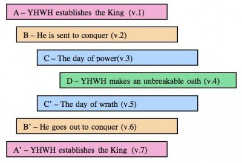

If I could ask them one question . . .
Come Follow Me, Lesson 29
« Previous
Next »
For Come Follow Me, lesson 29, Jul 20-26, Alam 36-38
If I wanted to encourage thought and try to understand devout believers better, I might ask:
“What do chiasmuses tell us about the Book of Mormon?”
Things to consider:
- Alma 36 is held out by some as one of the most remarkable examples of a Hebraic literary device called chiasmus.
- “Chiasmus, sometimes called an inverted parallelism, is a Hebrew literary form where words or ideas are arranged in a certain order and then repeated in reverse order. This repetition emphasizes important ideas and words. In addition, the writer’s main idea is often located at the center of the chiasmus” (Book of Mormon Student Manual for Religion 121-122, copyrighted 2009, p. 232). Because chiasmuses were used in ancient Hebrew, many believers see it as evidence of ancient authorship of the Book of Mormon.
- Here’s an illustrated example of the chiastic structure of Psalms 110

- But, let’s go back to the definition I site from a Church manual above. It seems to show a strong confirmation bias; the authors qualify chiasmus as a Hebrew literary form. Qualifying it that way could set up a framing effect, influencing the reader to think chiastic structure is predominantly or only found in Hebrew. Though it was often used in Hebrew, “Chiasmus also shows up in ancient Sanskrit, Mesopotamian, and Egyptian texts. It appears in ancient Chinese writings, including the Analects of Confucius” (Introduction to Chiasmus Studies).
- It will probably be no surprise that I conclude Book of Mormon chiasmuses do not amount to evidence for ancient authorship. If you go to my annotations for Alma 36, you’ll see I have bolded and underlined the parallels claimed to be there by the Book of Mormon Student Manual. Among the problems with the claim that this chiastic example is evidence supporting the Church is that 80% of the words of Alma 36 are ignored in order to make the chiastic structure work. From my assessment of Alma 36, I think the chiastic pattern is less robust than the Book of Mormon Student Manual makes it out to be (See Patternicity: Finding Meaningful Patterns in Meaningless Noise by Scientific American).
- Besides, did it ever occur to Book of Mormon apologists that if Joseph or others were the authors, they could have been heavily influenced in their writing by their familiarity with the Bible and an attempt to mimic its language style? The Late War published in 1816 and purposely written “in the scriptural style” apparently “contains several significant chiastic structures” (A Comparison of The Book of Mormon and The Late War).
- And there are other interesting examples of modern writing with chiasmuses. James Strang claimed to be the rightful successor of the Mormon Church after Joseph Smith died. He “translated” various works and his followers currently claim his “translations” have chiasmuses that demonstrate they are of ancient origin (Strangite Chiasmus). Hmmmmm.
- For a wonderful satirical piece on “Hebraicisms” like chiasmuses, see “Hebraicisms, Chiasmus, and Other Internal Evidence for Ancient Authorship in Green Eggs and Ham” by Robert Patterson.
- It seems it might have been more remarkable if chiasmuses had not been found in the Book of Mormon.
Other observations about this lesson’s reading:
- The prosperity gospel is preached (Alma 36:1, Alma 37:13, and Alma 38:1).
- A miracle precedes the faith a couple times (Alma 36:6-7 and Alma 38:7).
- Another fall to the earth because of astonishment (Alma 36:10-11).
- In defense of the Book of Mormon! The reading says it took Alma three days and nights to recover after his Pauline experience (Alma 36:10-11). But, in (Mosiah 27:23) it informs us they fasted and prayed for two days and nights before Alma could get up. Some think this is a contradiction, but it’s not.
- The apparently ambiguous or misleading term “eternal” is used to describe torment (Alma 36:12), but in this case “eternal” doesn’t mean without end.
- It refers to the Exodus, but the consensus is that the Exodus never happened (Alma 36:28).
- Alma commands his son Helaman to keep a record of the people upon the plates (Alma 37:2). Not only is that cringe-worthy because Alma sounds like a control-freak dad, but I’m left wondering how Alma and Helaman would have felt knowing the plates would not be used in Joseph Smith’s “translation” of the Book of Mormon.
- Alma claims Lehi’s brass plates “should go forth unto every nation, kindred, tongue, and people” (Alma 37:3-4). My annotation shows that one group thinks they’ve fulfilled that prophecy.
- The term “compass” seems anachronistic (Alma 37:38, 43-44).
- I think Alma’s admonition about pride is particularly interesting considering certain boasts by Brigham Young and Joseph Smith (Alma 38:11).
If you could ask believers questions about the scriptures for this lesson, what would you ask?
Have fun studying!
« Previous
If I could ask them one question, Lesson 29
Next »